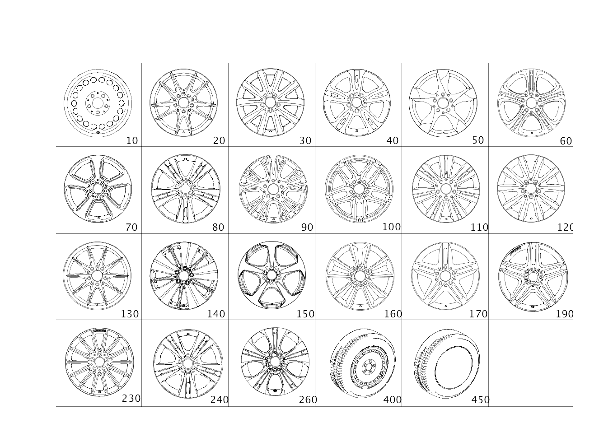

| № | Артикул | Название | Кол. | Примечание |
|---|---|---|---|---|
| 10 | A 246 400 00 02 | Дисковое колесо | 2 | Стальной колесный диск переднего моста; 6.5J X 15 H2 ET 47 |
| 10 | A 246 400 00 02 | Дисковое колесо | 2 | Стальной колесный диск заднего моста; 6.5J X 15 H2 ET 47 |
| 10 | A 246 400 01 02 | Дисковое колесо | 2 | Стальной колесный диск переднего моста; 6.5J X 16 H2 ET 49 |
| 10 | A 246 400 01 02 | Дисковое колесо | 2 | Стальной колесный диск заднего моста; 6.5J X 16 H2 ET 49 |
| 10 | A 246 400 00 02 | Дисковое колесо | 4 | Стальной колесный диск переднего и заднего моста; 6.5J X 15 H2 ET 47 |
| 10 | A 246 400 01 02 | Дисковое колесо | 4 | Стальной колесный диск переднего и заднего моста; 6.5J X 16 H2 ET 49 |
| 20 | A 246 401 13 02 | Дисковое колесо | 2 | КОЛЕСНЫЙ ДИСК С 10 СПИЦАМИ ДЛЯ ПЕРЕДНЕГО МОСТА; 6.5J X 16 H2 ET 49 |
| 20 | A 246 401 13 02 | Дисковое колесо | 2 | КОЛЕСНЫЙ ДИСК С 10 СПИЦАМИ ДЛЯ ЗАДНЕГО МОСТА; 6.5J X 16 H2 ET 49 |
| 30 | A 246 401 02 02 | Дисковое колесо | 2 | 10\-спицевое колесо переднего моста; 6.5J X 16 H2 ET 49 |
| 30 | A 246 401 02 02 | Дисковое колесо | 2 | 10\-спицевое колесо заднего моста; 6.5J X 16 H2 ET 49 |
| 30 | A 246 401 05 00 | Дисковое колесо | 2 | КОЛЕСНЫЙ ДИСК С 10 СПИЦАМИ ДЛЯ ПЕРЕДНЕГО МОСТА; 6.5J X 16 H2 ET 49 |
| 30 | A 246 401 05 00 | Дисковое колесо | 2 | КОЛЕСНЫЙ ДИСК С 10 СПИЦАМИ ДЛЯ ЗАДНЕГО МОСТА; 6.5J X 16 H2 ET 49 |
| 30 | A 246 401 02 02 | Дисковое колесо | 4 | 10\-спицевый колесный диск, передний и задний мост; 6.5J X 16 H2 ET 49 |
| 40 | A 246 401 00 00 | Дисковое колесо | 2 | Колесо с 5 сдвоенными спицами, передний мост; 6.5J X 16 H2 ET 49 |
| 40 | A 246 401 00 00 | Дисковое колесо | 2 | Колесо с 5 сдвоенными спицами, задний мост; 6.5J X 16 H2 ET 49 |
| 40 | A 246 401 00 00 | Дисковое колесо | 4 | ДИСК С 5 ДВОЙН.СПИЦАМИ ПЕРЕДН.И ЗАДН.МОСТА; 6.5J X 16 H2 ET 49 |
| 50 | A 246 401 05 02 | Дисковое колесо | 2 | КОЛЕСНЫЙ ДИСК С 5 СПИЦАМИ ДЛЯ ПЕРЕДНЕГО МОСТА; 7.5J X 17 H2 ET 52.5 |
| 50 | A 246 401 05 02 | Дисковое колесо | 2 | КОЛЕСНЫЙ ДИСК С 5 СПИЦАМИ ДЛЯ ЗАДНЕГО МОСТА; 7.5J X 17 H2 ET 52.5 |
| 50 | A 246 401 05 02 | Дисковое колесо | 2 | КОЛЕСНЫЙ ДИСК С 5 ДВОЙНЫМИ СПИЦАМИ ДЛЯ ЗАДНЕГО МОСТА; 7.5J X 17 H2 ET 52.5 |
| 60 | A 246 401 10 02 | Дисковое колесо | 2 | КОЛЕСНЫЙ ДИСК С ДВОЙНЫМИ СПИЦАМИ С 5 ОТВЕРСТИЯМИ ДЛЯ ПЕРЕДНЕГО МОСТА; 7.5J X 17 H2 ET 52.5 |
| 60 | A 246 401 10 02 | Дисковое колесо | 2 | КОЛЕСНЫЙ ДИСК С 5 ДВОЙНЫМИ СПИЦАМИ ДЛЯ ЗАДНЕГО МОСТА; 7.5J X 17 H2 ET 52.5 |
| 70 | A 246 401 15 00 | Дисковое колесо | 2 | КОЛЕСНЫЙ ДИСК С 5 СПИЦАМИ ДЛЯ ПЕРЕДНЕГО МОСТА; 7,5JX17H2 ET 52,5 |
| 70 | A 246 401 15 00 | Дисковое колесо | 2 | КОЛЕСНЫЙ ДИСК С 5 СПИЦАМИ ДЛЯ ЗАДНЕГО МОСТА; 7,5JX17H2 ET 52,5 |
| 80 | A 246 401 22 00 | Дисковое колесо | 2 | Колесо с 5 сдвоенными спицами, передний мост; 7,5JX18H2ET52 |
| 80 | A 246 401 22 00 | Дисковое колесо | 2 | Колесо с 5 сдвоенными спицами, задний мост; 7,5JX18H2ET52 |
| 90 | A 246 401 14 02 | Дисковое колесо | 2 | КОЛЕСНЫЙ ДИСК С ДВОЙНЫМИ СПИЦАМИ С 5 ОТВЕРСТИЯМИ ДЛЯ ПЕРЕДНЕГО МОСТА; 7.5J X 17 H2 ET 52.5 |
| 90 | A 246 401 14 02 | Дисковое колесо | 2 | КОЛЕСНЫЙ ДИСК С 5 ДВОЙНЫМИ СПИЦАМИ ДЛЯ ЗАДНЕГО МОСТА; 7.5J X 17 H2 ET 52.5 |
| 100 | A 246 401 15 02 | Дисковое колесо | 2 | КОЛЕСНЫЙ ДИСК С ДВОЙНЫМИ СПИЦАМИ С 5 ОТВЕРСТИЯМИ ДЛЯ ПЕРЕДНЕГО МОСТА; 7.5J X 17 H2 ET 52.5 |
| 100 | A 246 401 15 02 | Дисковое колесо | 2 | КОЛЕСНЫЙ ДИСК С 5 ДВОЙНЫМИ СПИЦАМИ ДЛЯ ЗАДНЕГО МОСТА; 7.5J X 17 H2 ET 52.5 |
| 110 | A 246 401 06 02 | Дисковое колесо | 2 | КОЛЕСНЫЙ ДИСК С ДВОЙНЫМИ СПИЦАМИ С 7 ОТВЕРСТИЯМИ ДЛЯ ПЕРЕДНЕГО МОСТА; 7.5J X 17 H2 ET 52.5 |
| 110 | A 246 401 06 02 | Дисковое колесо | 2 | КОЛЕСНЫЙ ДИСК С ДВОЙНЫМИ СПИЦАМИ С 7 ОТВЕРСТИЯМИ ДЛЯ ЗАДНЕГО МОСТА; 7.5J X 17 H2 ET 52.5 |
| 120 | A 246 401 01 02 | Дисковое колесо | 2 | 10\-спицевое колесо переднего моста; 6.5J X 17 H2 ET 49 |
| 120 | A 246 401 01 02 | Дисковое колесо | 2 | 10\-спицевое колесо заднего моста; 6.5J X 17 H2 ET 49 |
| 120 | A 246 401 01 02 | Дисковое колесо | 4 | 10\-спицевый колесный диск, передний и задний мост; 6.5J X 17 H2 ET 49 |
| 130 | A 246 401 00 02 | Дисковое колесо | 2 | 10\-спицевое колесо переднего моста; 7.5J X 17 H2 ET 52.5 |
| 130 | A 246 401 00 02 | Дисковое колесо | 2 | 10\-спицевое колесо заднего моста; 7.5J X 17 H2 ET 52.5 |
| 140 | A 246 401 18 00 | Дисковое колесо | 2 | МНОГОСПИЦ.ДИСК ПЕРЕД.МОСТА; 7,5JX18H2 ET52 |
| 150 | A 246 401 11 00 | Дисковое колесо | 2 | 5\-спицевое колесо, передний мост; 7,5JX18H2 ET52 |
| 150 | A 246 401 11 00 | Дисковое колесо | 2 | 5\-спицевое колесо заднего моста; 7,5JX18H2 ET52 |
| 160 | A 246 401 06 00 | Дисковое колесо | 2 | КОЛЕСНЫЙ ДИСК С ДВОЙНЫМИ СПИЦАМИ С 5 ОТВЕРСТИЯМИ ДЛЯ ПЕРЕДНЕГО МОСТА; 7.5J X 18 H2 ET 52 |
| 160 | A 246 401 06 00 | Дисковое колесо | 2 | КОЛЕСНЫЙ ДИСК С 5 ДВОЙНЫМИ СПИЦАМИ ДЛЯ ЗАДНЕГО МОСТА; 7.5J X 18 H2 ET 52 |
| 160 | A 246 401 16 02 | Дисковое колесо | 2 | КОЛЕСНЫЙ ДИСК С ДВОЙНЫМИ СПИЦАМИ С 5 ОТВЕРСТИЯМИ ДЛЯ ПЕРЕДНЕГО МОСТА; 7.5J X 18 H2 ET 52 |
| 160 | A 246 401 06 00 | Дисковое колесо | 2 | КОЛЕСНЫЙ ДИСК С 5 ДВОЙНЫМИ СПИЦАМИ ДЛЯ ЗАДНЕГО МОСТА; 7.5J X 18 H2 ET 52 |
| 160 | A 246 401 16 02 | Дисковое колесо | 4 | ДИСК С 5 ДВОЙН.СПИЦАМИ ПЕРЕДН.И ЗАДН.МОСТА; 7.5J X 18 H2 ET 52 |
| 160 | A 246 401 06 00 | Дисковое колесо | 4 | ДИСК С 5 ДВОЙН.СПИЦАМИ ПЕРЕДН.И ЗАДН.МОСТА; 7.5J X 18 H2 ET 52 |
| 170 | A 176 401 07 00 | Колесо со спицами | 2 | КОЛЕСНЫЙ ДИСК С ДВОЙНЫМИ СПИЦАМИ С 5 ОТВЕРСТИЯМИ ДЛЯ ПЕРЕДНЕГО МОСТА; 7,5J X 18 H2 ET 52 |
| 170 | A 176 401 07 00 | Колесо со спицами | 2 | КОЛЕСНЫЙ ДИСК С 5 ДВОЙНЫМИ СПИЦАМИ ДЛЯ ЗАДНЕГО МОСТА; 7,5J X 18 H2 ET 52 |
| 190 | A 176 401 03 02 | Колесо со спицами | 2 | Колесо с 5 сдвоенными спицами, передний мост; 7.5J X 18 H2 ET 52 |
| 190 | A 176 401 03 02 | Колесо со спицами | 2 | Колесо с 5 сдвоенными спицами, задний мост; 7.5J X 18 H2 ET 52 |
| 230 | A 176 401 02 00 | Колесо со спицами | 2 | 14\-спицевый колесный диск, передний мост; 7,5J X 18 H2 ET 52 |
| 230 | A 176 401 02 00 | Колесо со спицами | 2 | 14\-спицевый колесный диск, задний мост; 7,5J X 18 H2 ET 52 |
| 240 | A 246 401 14 00 | Дисковое колесо | 2 | КОЛЕСНЫЙ ДИСК С ДВОЙНЫМИ СПИЦАМИ С 5 ОТВЕРСТИЯМИ ДЛЯ ПЕРЕДНЕГО МОСТА; 7.5J X 17 H2 ET 52.5 |
| 240 | A 246 401 14 00 | Дисковое колесо | 2 | КОЛЕСНЫЙ ДИСК С 5 ДВОЙНЫМИ СПИЦАМИ ДЛЯ ЗАДНЕГО МОСТА; 7.5J X 17 H2 ET 52.5 |
| 260 | A 246 401 08 00 | Дисковое колесо | 2 | КОЛЕСНЫЙ ДИСК С ДВОЙНЫМИ СПИЦАМИ С 5 ОТВЕРСТИЯМИ ДЛЯ ПЕРЕДНЕГО МОСТА; 7.5J X 17 H2 ET 52.5 |
| 260 | A 246 401 08 00 | Дисковое колесо | 2 | КОЛЕСНЫЙ ДИСК С 5 ДВОЙНЫМИ СПИЦАМИ ДЛЯ ЗАДНЕГО МОСТА; 7.5J X 17 H2 ET 52.5 |
| 400 | A 246 400 26 00 | Колесо | 1 | Запасное колесо |
| 400 | A 246 400 26 00 | Колесо | 1 | Запасное колесо |
| 450 | A 019 401 20 10 | Шина | 2 | Спереди и сзади 205/55 R 16 91V EXTENDED |
| 450 | A 019 401 20 10 | Шина | 2 | Спереди и сзади 205/55 R 16 91V EXTENDED |
| 450 | A 020 401 68 10 | Шина | 2 | Спереди и сзади REIFEN / 225/40 R18 92W XL EXTENDED |
| 450 | A 018 401 71 10 | Шина | 2 | СПЕРЕДИ И СЗАДИ REIFEN / 225/45 R17 91W EXTENDED |
| 450 | A 020 401 68 10 | Шина | 2 | Спереди и сзади REIFEN / 225/40 R18 92W XL EXTENDED |
| 450 | A 018 401 71 10 | Шина | 2 | СПЕРЕДИ И СЗАДИ REIFEN / 225/45 R17 91W EXTENDED |
| 450 | A 020 401 68 10 | Шина | 2 | СПЕРЕДИ И СЗАДИ REIFEN / 225/40 R18 92W XL EXTENDED |
| 450 | A 020 401 68 10 | Шина | 2 | СПЕРЕДИ И СЗАДИ REIFEN / 225/40 R18 92W XL EXTENDED |
| 450 | A 020 401 68 10 | Шина | 2 | Спереди и сзади REIFEN / 225/40 R18 92W XL EXTENDED |
| 450 | A 020 401 68 10 | Шина | 2 | Спереди и сзади REIFEN / 225/40 R18 92W XL EXTENDED |
| 450 | A 000 401 21 08 | Шина | 2 | СПЕРЕДИ И СЗАДИ |
| 450 | A 000 401 21 08 | Шина | 2 | СПЕРЕДИ И СЗАДИ |
| 450 | A 000 401 21 08 | Шина | 2 | СПЕРЕДИ И СЗАДИ |
| 450 | A 000 401 21 08 | Шина | 2 | СПЕРЕДИ И СЗАДИ |
| 510 | A 246 400 00 25 | Колпак колесного диска (WHEEL TRIM) | 4 | Передний и задний мост; 15" |
| 510 | A 247 400 05 00 | Колпак колеса (HUB CAP) | 4 | Передний и задний мост |
| 510 | A 246 400 01 25 | Колпак колесного диска (WHEEL TRIM) | 4 | Передний и задний мост; 16" |
| 510 | A 247 400 06 00 | Колпак колеса (HUB CAP) | 4 | Передний и задний мост |
| 510 | A 246 400 00 25 | Колпак колесного диска (WHEEL TRIM) | 4 | Передний и задний мост; 15" |
| 510 | A 247 400 05 00 | Колпак колеса (HUB CAP) | 4 | Передний и задний мост |
| 510 | A 246 400 01 25 | Колпак колесного диска (WHEEL TRIM) | 4 | Передний и задний мост; 16" |
| 510 | A 247 400 06 00 | Колпак колеса (HUB CAP) | 4 | Передний и задний мост |
| 510 | A 246 400 00 25 | Колпак колесного диска (WHEEL TRIM) | 4 | Передний и задний мост; 15" |
| 510 | A 247 400 05 00 | Колпак колеса (HUB CAP) | 4 | Передний и задний мост |
| 510 | A 247 400 06 00 | Колпак колеса (HUB CAP) | 4 | Передний и задний мост |
| 510 | A 246 400 01 25 | Колпак колесного диска (WHEEL TRIM) | 4 | ПЕРЕДНИЙ И ЗАДНИЙ МОСТ; 16" |
| 520 | A 171 400 01 25 | Крышка ступицы колеса | 4 | ПЕРЕДНИЙ И ЗАДНИЙ МОСТ |
| 520 | A 222 400 22 00 | Колпак ступицы (CENTER CAP) | 4 | Передний и задний мост |
| 520 | A 171 400 01 25 | Крышка ступицы колеса | 4 | Передний и задний мост |
| 520 | A 222 400 22 00 | Колпак ступицы (CENTER CAP) | 4 | Передний и задний мост |
| 520 | A 171 400 01 25 | Крышка ступицы колеса | 4 | Передний и задний мост |
| 520 | A 222 400 22 00 | Колпак ступицы (CENTER CAP) | 4 | Передний и задний мост |
| 520 | A 171 400 01 25 | Крышка ступицы колеса | 4 | Передний и задний мост |
| 520 | A 222 400 22 00 | Колпак ступицы (CENTER CAP) | 4 | Передний и задний мост |
| 520 | A 204 400 04 25 | Колпак колеса (HUB CAP) | 1 | Комплект деталей |
| 520 | A 222 400 30 00 | Колпак колеса | 1 | Комплект деталей |
| 520 | A 171 400 00 25 | Крышка ступицы колеса | 4 | Передний и задний мост |
| 520 | A 222 400 22 00 | Колпак ступицы (CENTER CAP) | 4 | Передний и задний мост |
| 520 | A 204 400 04 25 | Колпак колеса (HUB CAP) | 1 | Комплект деталей |
| 520 | A 222 400 30 00 | Колпак колеса | 1 | Комплект деталей |
| 520 | A 171 400 00 25 | Крышка ступицы колеса | 4 | Передний и задний мост |
| 520 | A 222 400 22 00 | Колпак ступицы (CENTER CAP) | 4 | Передний и задний мост |
| 530 | A 000 990 83 07 | Винт со сфер. буртиком (SPHERICAL COLLAR SCREW) | 20 | Передний и задний мост; M14X1,5X30,7 |
| 550 | A 000 905 72 00 | Датчик давл. воздуха шины (TIRE PRESSURE SENSOR) | 2 | Система контроля давления в шинах, передний мост |
| 550 | A 000 905 00 30 | Датчик давл. воздуха шины (TIRE PRESSURE SENSOR) | 2 | Система контроля давления в шинах, передний мост |
| 550 | A 000 905 72 00 | Датчик давл. воздуха шины (TIRE PRESSURE SENSOR) | 2 | Система контроля давления в шинах, задний мост |
| 550 | A 000 905 00 30 | Датчик давл. воздуха шины (TIRE PRESSURE SENSOR) | 2 | Система контроля давления в шинах, задний мост |
| 550 | A 000 905 18 04 | Датчик давл. воздуха шины (TIRE PRESSURE SENSOR) | 2 | Система контроля давления в шинах, передний мост |
| 550 | A 000 905 72 00 | Датчик давл. воздуха шины (TIRE PRESSURE SENSOR) | 4 | Система контроля давления воздуха в шинах |
| 550 | A 000 905 00 30 | Датчик давл. воздуха шины (TIRE PRESSURE SENSOR) | 4 | СИСТЕМА КОНТРОЛЯ ДАВЛЕНИЯ В ШИНАХ |
| 550 | A 000 905 00 30 | Датчик давл. воздуха шины (TIRE PRESSURE SENSOR) | 4 | СИСТЕМА КОНТРОЛЯ ДАВЛЕНИЯ В ШИНАХ |
| 550 | A 000 905 18 04 | Датчик давл. воздуха шины (TIRE PRESSURE SENSOR) | 4 | Система контроля давления воздуха в шинах |
| 550 | A 000 905 18 04 | Датчик давл. воздуха шины (TIRE PRESSURE SENSOR) | 2 | Система контроля давления в шинах, задний мост |
| 555 | A 000 400 10 00 | - Вентиль шины (TIRE VALVE) | 2 | Передний мост |
| 555 | A 000 400 10 00 | - Вентиль шины (TIRE VALVE) | 2 | Задний мост |
| 555 | A 000 400 13 00 | - Вентиль шины (TIRE VALVE) | 2 | Передний мост |
| 555 | A 000 400 13 00 | - Вентиль шины (TIRE VALVE) | 2 | Задний мост |
| 555 | A 000 400 06 00 | - Вентиль шины (TIRE VALVE) | 2 | Передний мост |
| 555 | A 000 400 06 00 | - Вентиль шины (TIRE VALVE) | 2 | Задний мост |
| 555 | A 000 400 14 00 | - Вентиль шины (TIRE VALVE) | 2 | Передний мост |
| 555 | A 000 400 14 00 | - Вентиль шины (TIRE VALVE) | 2 | Задний мост |
| 555 | A 000 400 03 13 | - Вентиль шины (TIRE VALVE) | 4 | Вентиль для накачивания шины, |
| 555 | A 000 400 02 13 | - Вентиль шины (TIRE VALVE) | 4 | Вентиль для накачивания шины, |
| 556 | A 000 997 91 05 | - Плоское уплотнение (GASKET) | 2 | Уплотнительное кольцо клапана переднего моста |
| 556 | A 000 997 91 05 | - Плоское уплотнение (GASKET) | 2 | Уплотнительное кольцо клапана заднего моста |
| 560 | A 000 401 16 14 | - Гайка вентиля (VALVE NUT) | 2 | Передний мост |
| 560 | A 000 401 59 04 | - Гайка вентиля (VALVE NUT) | 2 | Передний мост |
| 560 | A 000 401 16 14 | - Гайка вентиля (VALVE NUT) | 2 | Задний мост |
| 560 | A 000 401 59 04 | - Гайка вентиля (VALVE NUT) | 2 | Задний мост |
| 560 | A 000 401 17 14 | - Гайка вентиля (VALVE NUT) | 2 | Передний мост |
| 560 | A 000 401 17 14 | - Гайка вентиля (VALVE NUT) | 2 | Задний мост |
| 560 | A 000 401 17 14 | - Гайка вентиля (VALVE NUT) | 2 | Задний мост |
| 560 | A 000 401 17 14 | - Гайка вентиля (VALVE NUT) | 2 | Передний мост |
| 560 | A 000 401 16 14 | - Гайка вентиля (VALVE NUT) | 4 | Передний и задний мост |
| 560 | A 000 401 59 04 | - Гайка вентиля (VALVE NUT) | 4 | ПЕРЕДНИЙ И ЗАДНИЙ МОСТ |
| 560 | A 000 401 59 04 | - Гайка вентиля (VALVE NUT) | 4 | ПЕРЕДНИЙ И ЗАДНИЙ МОСТ |
| 560 | A 000 401 59 04 | - Гайка вентиля (VALVE NUT) | 4 | ПЕРЕДНИЙ И ЗАДНИЙ МОСТ |
| 565 | A 000 401 06 09 | - Защитный колпачок (PROTECTIVE CAP) | 2 | Передний мост |
| 565 | A 000 401 06 09 | - Защитный колпачок (PROTECTIVE CAP) | 2 | Задний мост |
| 570 | A 000 400 03 13 | Вентиль шины (TIRE VALVE) | 2 | Передний мост |
| 570 | A 000 400 03 13 | Вентиль шины (TIRE VALVE) | 2 | Задний мост |
| 570 | A 000 400 02 13 | Вентиль шины (TIRE VALVE) | 2 | Передний мост |
| 570 | A 000 400 02 13 | Вентиль шины (TIRE VALVE) | 2 | Задний мост |
| 570 | A 000 400 29 13 | Вентиль шины (TIRE VALVE) | 1 | Аварийное запасное колесо |
| 570 | A 000 400 29 13 | Вентиль шины (TIRE VALVE) | 1 | Аварийное запасное колесо |
| 580 | N 007757 008600 | - Колпачок вентиля (VALVE CAP) | 2 | Передний мост |
| 580 | N 007757 008600 | - Колпачок вентиля (VALVE CAP) | 2 | Задний мост |
| 600 | A 171 401 01 94 | Балансировочный грузик (BALANCING WEIGHT) | NB | Исполнение с клеевым соединением; 5 GRAMM |
| 600 | A 171 401 02 94 | Балансировочный грузик (BALANCING WEIGHT) | NB | Исполнение с клеевым соединением; 10 GRAMM |
| 600 | A 171 401 03 94 | Балансировочный грузик (BALANCING WEIGHT) | NB | Исполнение с клеевым соединением; 15 GRAMM |
| 600 | A 171 401 04 94 | Балансировочный грузик (BALANCING WEIGHT) | NB | Исполнение с клеевым соединением; 20 GRAMM |
| 600 | A 171 401 05 94 | Балансировочный грузик (BALANCING WEIGHT) | NB | Исполнение с клеевым соединением; 25 GRAMM |
| 600 | A 171 401 06 94 | Балансировочный грузик (BALANCING WEIGHT) | NB | Исполнение с клеевым соединением; 30 GRAMM |
| 600 | A 171 401 07 94 | Балансировочный грузик (BALANCING WEIGHT) | NB | Исполнение с клеевым соединением; 35 GRAMM |
| 600 | A 171 401 08 94 | Балансировочный грузик (BALANCING WEIGHT) | NB | Исполнение с клеевым соединением; 40 GRAMM |
| 600 | A 171 401 09 94 | Балансировочный грузик (BALANCING WEIGHT) | NB | Исполнение с клеевым соединением; 45 GRAMM |
| 600 | A 171 401 10 94 | Балансировочный грузик | NB | Исполнение с клеевым соединением; 50 GRAMM |
| 600 | A 171 401 11 94 | Балансировочный грузик (BALANCING WEIGHT) | NB | Исполнение с клеевым соединением; 55 GRAMM |
| 600 | A 171 401 12 94 | Балансировочный грузик (BALANCING WEIGHT) | NB | Исполнение с клеевым соединением; 60 GRAMM |
| 610 | A 126 401 08 28 | Удерживающая пружина (RETAINING SPRING) | 2 | Балансировочный грузик с внутренней стороны колеса |
| 610 | A 126 401 08 28 | Удерживающая пружина (RETAINING SPRING) | 2 | БАЛАНСИРОВОЧНЫЙ ГРУЗИК ДЛЯ ВНУТРЕННЕЙ СТОРОНЫ КОЛЁСНОГО ДИСКА |
| 610 | A 126 401 08 28 | Удерживающая пружина (RETAINING SPRING) | 2 | Балансировочный грузик с внутренней стороны колеса |
| 610 | A 126 401 08 28 | Удерживающая пружина (RETAINING SPRING) | 2 | БАЛАНСИРОВОЧНЫЙ ГРУЗИК ДЛЯ ВНУТРЕННЕЙ СТОРОНЫ КОЛЁСНОГО ДИСКА |
| 610 | A 126 401 08 28 | Удерживающая пружина (RETAINING SPRING) | 2 | Балансировочный грузик с наружной стороны колеса |
| 610 | A 126 401 08 28 | Удерживающая пружина (RETAINING SPRING) | 2 | БАЛАНСИРОВОЧНЫЙ ГРУЗИК ДЛЯ НАРУЖНОЙ СТОРОНЫ КОЛЁСНОГО ДИСКА |
| 610 | A 126 401 08 28 | Удерживающая пружина (RETAINING SPRING) | 2 | Балансировочный грузик с наружной стороны колеса |
| 610 | A 126 401 08 28 | Удерживающая пружина (RETAINING SPRING) | 2 | БАЛАНСИРОВОЧНЫЙ ГРУЗИК ДЛЯ НАРУЖНОЙ СТОРОНЫ КОЛЁСНОГО ДИСКА |
| 610 | A 126 401 08 28 | Удерживающая пружина (RETAINING SPRING) | 4 | Балансировочный грузик с внутренней стороны колеса |
| 610 | A 126 401 08 28 | Удерживающая пружина (RETAINING SPRING) | 4 | Балансировочный грузик с внутренней стороны колеса |
| 610 | A 126 401 08 28 | Удерживающая пружина (RETAINING SPRING) | 4 | Балансировочный грузик с наружной стороны колеса |
| 610 | A 126 401 08 28 | Удерживающая пружина (RETAINING SPRING) | 4 | Балансировочный грузик с наружной стороны колеса |
| 610 | A 124 401 07 28 | Удерживающая пружина (RETAINING SPRING) | 2 | Балансировочный грузик с внутренней стороны колеса |
| 610 | A 124 401 07 28 | Удерживающая пружина (RETAINING SPRING) | 2 | БАЛАНСИРОВОЧНЫЙ ГРУЗИК ДЛЯ ВНУТРЕННЕЙ СТОРОНЫ КОЛЁСНОГО ДИСКА |
| 610 | A 124 401 07 28 | Удерживающая пружина (RETAINING SPRING) | 2 | Балансировочный грузик с внутренней стороны колеса |
| 610 | A 124 401 07 28 | Удерживающая пружина (RETAINING SPRING) | 2 | БАЛАНСИРОВОЧНЫЙ ГРУЗИК ДЛЯ ВНУТРЕННЕЙ СТОРОНЫ КОЛЁСНОГО ДИСКА |
| 610 | A 124 401 07 28 | Удерживающая пружина (RETAINING SPRING) | 4 | Балансировочный грузик с внутренней стороны колеса |
| 620 | A 171 401 27 94 | Балансировочный грузик (BALANCING WEIGHT) | NB | 5 GRAMM |
| 620 | A 171 401 28 94 | Балансировочный грузик (BALANCING WEIGHT) | NB | 10 GRAMM |
| 620 | A 171 401 29 94 | Балансировочный грузик (BALANCING WEIGHT) | NB | 15 GRAMM |
| 620 | A 171 401 14 94 | Балансировочный грузик (BALANCING WEIGHT) | NB | 20 GRAMM |
| 620 | A 171 401 15 94 | Балансировочный грузик (BALANCING WEIGHT) | NB | 25 GRAMM |
| 620 | A 171 401 16 94 | Балансировочный грузик (BALANCING WEIGHT) | NB | 30 GRAMM |
| 620 | A 171 401 17 94 | Балансировочный грузик (BALANCING WEIGHT) | NB | 35 GRAMM |
| 620 | A 171 401 18 94 | Балансировочный грузик (BALANCING WEIGHT) | NB | 40 GRAMM |
| 620 | A 171 401 19 94 | Балансировочный грузик (BALANCING WEIGHT) | NB | 45 GRAMM |
| 620 | A 171 401 20 94 | Балансировочный грузик (BALANCING WEIGHT) | NB | 50 GRAMM |
| 620 | A 171 401 21 94 | Балансировочный грузик (BALANCING WEIGHT) | NB | 55 GRAMM |
| 620 | A 171 401 22 94 | Балансировочный грузик (BALANCING WEIGHT) | NB | 60 GRAMM |
| 800 | A 000 905 85 04 | Датчик давл. воздуха шины (TIRE PRESSURE SENSOR) | 1 | Комплект деталей; 433MHZ |
Позиций: 186 · подписано на схемах: 186 · колесо — плавный зум в курсор, перетаскивание — пан, двойной клик — зум, клик по артикулу — скопировать.